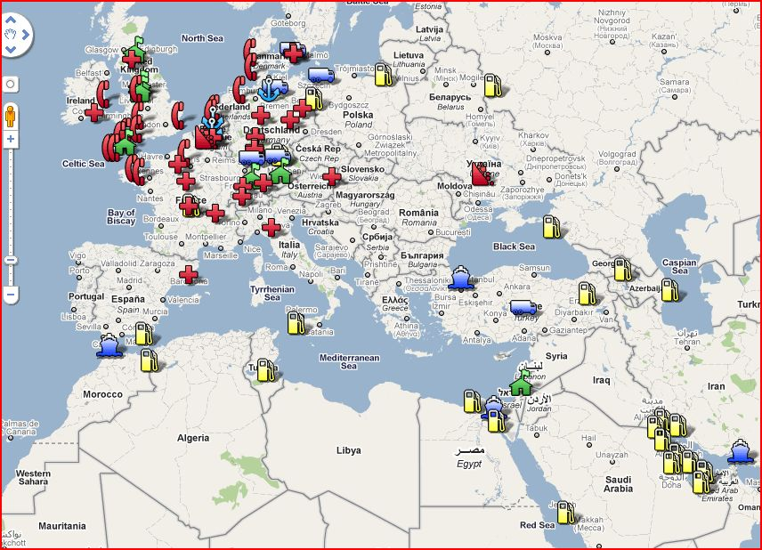

Again, the ease of use of Google Maps has allowed for a quick and dirty spatial visualization, in this case the folks at floatingsheep.org have mapped and done some analysis of the Wikileaks cable detailing global infrastructure vital to US interests.

Their conclusion:These data offer a fascinating insight into the ways that the national security priorities of the United States span the entire globe. This global web of essential facilities goes a long way to explain the fact that the US Department of Defense has more military facilities around the world than all other nations combined. The globalization of the world economy means that facilities that are vital to the communication, health, and economic needs of the U.S. are scattered across the planet; and this ultimately means that the U.S. (as well as other developed and developing countries) have to contend with new and changing notions of what “security” means in the 21st century.
We are truly living in a network society.
The popularity of presenting data spatially cannot be overstated. As visualizations, these maps (whether they’re simply using geography as an index or displaying complex spatial phenomena) are intuitive and seductive. While traditional GIS work, replete with sophisticated spatial analysis, is often not performed in these spatial visualizations, they are highly accessible both in production and appreciation.
One criticism I will make of the Google Maps school of mapmaking is that the visual character of the map is maddeningly bland. To see everything from the travels of Zhenghe to the protests of London tuition hikes to US security interests presented on the same antiseptic Google Map, with Google Logo prominently displayed, using Google Symbols and Google UX, trains both the creator and the user to think that such things are appurtenant to the knowledge being displayed. It’s an implicit argument that the data being presented is the only thing important, and that utility and expedience are the most desirable aspects of a tool that displays such data. The “powered by Google” note, so ubiquitous in our presentation of spatial data on the web, is particularly troublesome to me, and I think that UX elements, both look-and-feel and prominent logos, are part of the same worrisome package that Marcuse warned against in One-Dimensional Man.
When the method for delivery of knowledge is packaged in such a way that the locations of historic crimes or issues of national security are presented with all the same style and trappings as the locations of restaurants and gas stations, then you take part in numbing the national discourse through reducing the distinguishable nature of each piece of knowledge. Tools that provide the ability for non-experts to easily produce compelling visualizations are extremely valuable, but their proliferation is not necessarily the best thing.